1. Описание проекта
Synopsis Generator — агентная система для генерации художественных синопсисов по пользовательскому запросу в свободной форме.
Система извлекает из сообщения пять основных параметров: идею произведения, жанр, стилистику, язык и требуемый объём. Пользователю не требуется заполнять их по отдельности. Например:
Напиши на русском мрачный психологический триллер на пять абзацев о детективе, который расследует исчезновение жителей небольшого города.
Если данных недостаточно или часть требований неоднозначна, граф переходит в Human-in-the-Loop: формирует уточняющий вопрос, приостанавливается и затем возобновляется после ответа пользователя.
После подготовки технического задания система:
-
при необходимости создаёт или загружает литературный проект;
-
выбирает специализированный Writer по жанру;
-
генерирует draft;
-
передаёт draft узлу
critic; -
при необходимости возвращает текст выбранному Writer на доработку;
-
после одобрения Critic или достижения
max_revisionsвыполняет языковую редактуру; -
формирует новый snapshot долговременной памяти;
-
пытается сохранить генерацию и память через MCP-сервер.
Историю можно продолжать в новых HTTP-запросах, передавая тот же story_id. При этом каждый новый запуск получает собственный thread_id, а Writer использует сохранённую память предыдущих частей.
Ответ API может содержать story_id, synopsis_id, thread_id, выбранный Writer, draft, финальный текст, результат Critic, число ревизий и состояние долговременной памяти. story_id и synopsis_id могут отсутствовать, если соответствующие MCP-операции недоступны.
Проект является учебным сервисом для изучения LangGraph, локальных LLM через Ollama, Human-in-the-Loop, MCP и persistence в PostgreSQL.
2. Архитектура
Система построена как ориентированный граф состояний на базе LangGraph. Такой подход выбран потому, что процесс содержит условные переходы, циклы, приостановку выполнения и несколько ролей, а не сводится к цепочке Запрос → LLM → Ответ.
2.1. Основные компоненты
| Компонент | Назначение |
|---|---|
|
HTTP API для запуска новой генерации и возобновления приостановленного workflow. |
|
Состояние графа, маршрутизация, циклы Writer — Critic и Human-in-the-Loop. |
|
Локальная LLM. Все роли используют модель из |
|
Хранит технические checkpoints LangGraph и предметные данные проекта. |
|
Отдельный MCP-сервис с инструментами диагностики, сохранения генераций и работы с памятью историй. |
|
Управляет миграциями только предметных таблиц приложения. |
|
Запускает API и MCP-сервис и подключает их к внешней сети |
2.2. Общая логика графа
Граф начинается с load_story_context, затем анализирует требования. При неполном ТЗ запускается цикл уточнений. После успешного анализа создаётся или подтверждается story project, genre_router выбирает Writer, а результат проходит цикл Writer — Critic. Финальная цепочка всегда имеет вид:
language_editor -> memory_manager -> persist_story -> ENDПолный набор узлов и рёбер:
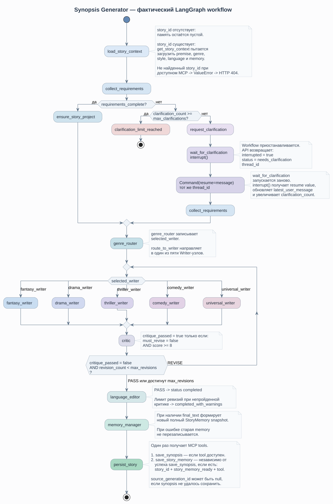
2.3. Почему выбрана графовая архитектура
LangGraph подходит задаче по четырём причинам:
-
требуется условная ветка уточнений и
interrupt()/resume; -
Critic должен уметь возвращать текст тому же Writer;
-
роли анализатора, Writer, Critic, Editor и Memory Manager имеют разную ответственность;
-
рабочее состояние должно сохраняться между HTTP-запросами в HITL-сценарии.
Узлы не вызывают друг друга напрямую. Они изменяют SynopsisState, а функции маршрутизации выбирают следующее ребро. Например, route_after_critic отправляет граф в language_editor, если текст принят или исчерпан max_revisions; иначе возвращает выполнение в сохранённый selected_writer.
2.4. Состояние и внешние данные
Рабочим контрактом графа является SynopsisState. В нём находятся требования, текущий draft, результат Critic, счётчики уточнений и ревизий, thread_id, story_id, synopsis_id и текущая story memory.
При этом техническое состояние workflow и долговременная память произведения разделены:
-
thread_idотносится к одному LangGraph workflow и используется checkpointer; -
story_idотносится к литературному проекту и переживает несколько workflow; -
synopsis_idотносится к одной сохранённой генерации.
Подробно persistence описан в разделе Хранение состояния и памяти.
2.5. MCP как отдельный слой
LangGraph не выполняет SQL-запросы к предметным таблицам напрямую. Узлы получают MCP tools и вызывают их программно. MCP tool передаёт работу сервисному слою, который уже взаимодействует с PostgreSQL или HTTP-инфраструктурой.
Подробная структура сервера и его инструменты описаны в разделе Описание инструментов.
3. Описание узлов графа
Каждый этап обработки представлен отдельным LangGraph node. Узел получает SynopsisState и возвращает изменённые поля состояния.
3.1. load_story_context
Первый узел графа. Если story_id отсутствует, он инициализирует пустую память и помечает запрос как новую историю.
Если story_id передан, узел ищет MCP tool get_story_context и загружает:
-
title; -
premise; -
genre; -
style; -
language; -
текущий
memory; -
memory_version.
premise, genre, style и language становятся исходным контекстом для нового запроса. Поле length в story_projects не хранится и остаётся требованием конкретной генерации.
Если story с указанным ID не найдена, узел поднимает ValueError, который API преобразует в HTTP 404. Если же MCP или PostgreSQL временно недоступны, возвращается статус story_context_unavailable, и граф продолжает работу без загруженной памяти.
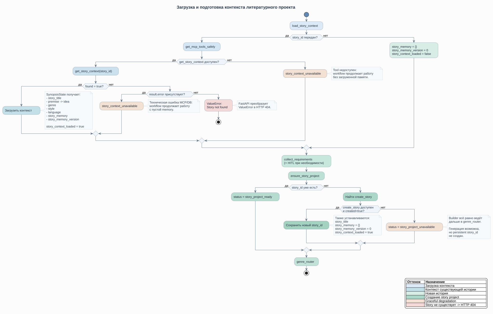
3.2. collect_requirements
Узел превращает свободное сообщение в структурированное ТЗ. Используется LLM со structured output RequirementsAnalysis.
Обязательные поля:
| Поле | Назначение |
|---|---|
|
Основная идея текущей генерации. |
|
Художественный жанр. |
|
Желаемая стилистика. |
|
Язык итогового текста. |
|
Требование к объёму. |
Новые значения объединяются с уже известными. Явное новое указание пользователя имеет приоритет. Дополнительно код очищает служебные значения вроде null, не указано и внутренние имена Writer-узлов.
После анализа формируются missing_fields, ambiguous_fields, clarification_points и requirements_complete.
При ошибке LLM используется deterministic fallback: он не пытается заново понять свободный текст, а проверяет, какие обязательные поля уже заполнены в состоянии.
3.3. request_clarification
Если ТЗ неполное, узел формирует краткий вопрос на основе отсутствующих и неоднозначных полей. Основной путь использует structured output ClarificationRequest; при ошибке LLM вопрос строится программно.
3.4. wait_for_clarification
Узел не вызывает LLM. Он выполняет interrupt() и передаёт наружу текст вопроса, список проблем, номер попытки и max_clarifications.
После Command(resume=…) ответ пользователя становится новым latest_user_message, clarification_count увеличивается на единицу, и граф возвращается к collect_requirements.
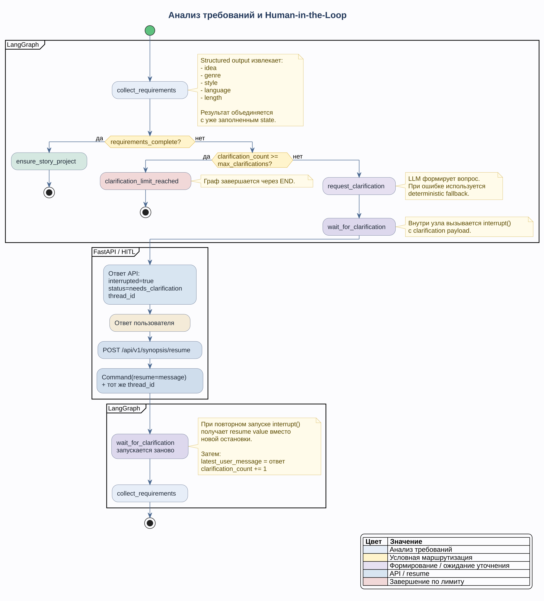
3.5. clarification_limit_reached
route_after_requirements направляет сюда граф, если требования всё ещё неполные и clarification_count >= max_clarifications.
Узел устанавливает статус clarification_limit_reached и завершает workflow.
3.6. ensure_story_project
Гарантирует наличие постоянного story_id.
Если story_id уже есть, узел ничего не создаёт. Для новой истории он вызывает MCP tool create_story и передаёт title, premise, genre, style и language.
Техническое название формируется без LLM: из idea, максимум до 100 символов. Новая история начинается с пустой памяти и memory_version = 0.
Если MCP недоступен, устанавливается story_project_unavailable, но граф всё равно продолжает генерацию; в этом случае новая история может остаться без story_id.
3.7. genre_router
Маршрутизация детерминирована и основана на ключевых словах в нормализованном genre.
| Ключевые слова | Writer |
|---|---|
|
|
|
|
|
|
|
|
остальные жанры |
|
Выбранный узел сохраняется в selected_writer.
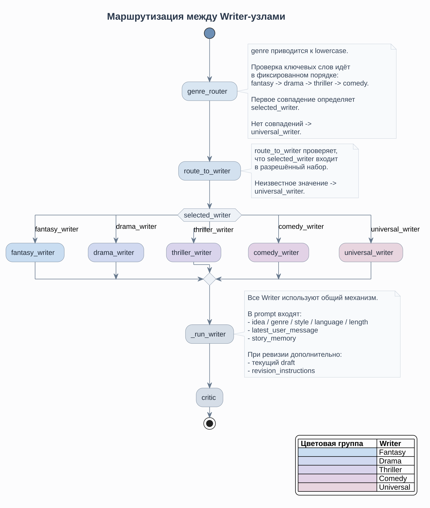
3.8. Writer-узлы
Доступны пять Writer:
-
fantasy_writer; -
drama_writer; -
thriller_writer; -
comedy_writer; -
universal_writer.
Все они используют общий _run_writer, но получают разное текстовое описание специализации. Writer работает на общей модели LLM_MODEL с temperature = 0.6.
В prompt входят ТЗ, latest_user_message и story_memory. При ревизии дополнительно передаются текущий draft и revision_instructions. На ревизии увеличивается revision_count.
3.9. critic
critic оценивает только текущий draft и не получает предыдущие версии или прошлые оценки. В prompt входят ТЗ и story_memory.
Critic проверяет содержание, логику, жанр, стиль, язык, формальные ограничения и непротиворечивость контексту истории. Орфография и пунктуация намеренно оставлены редактору.
Результат имеет структуру CritiqueResult: score, must_revise, issues, revision_instructions.
Текст считается принятым только при двух условиях:
must_revise = false
score >= 8При неудаче и незаполненном лимите граф возвращается напрямую в selected_writer, без повторного genre_router.
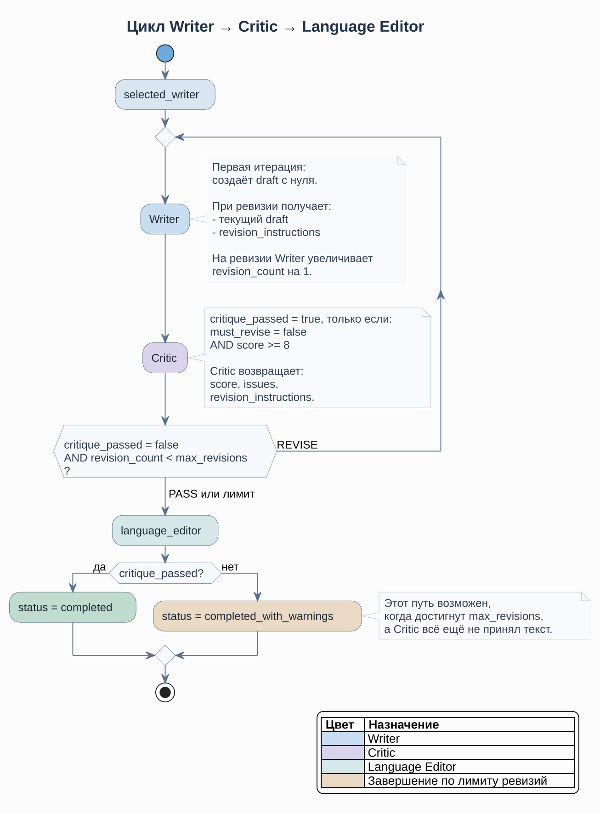
3.10. language_editor
Выполняет только языковую редактуру: грамматика, орфография, пунктуация, повторы и неестественные формулировки. Prompt запрещает изменять сюжет, персонажей, события и смысл.
Если Critic ранее принял текст, статус становится completed; при переходе из-за достижения max_revisions — completed_with_warnings.
3.11. memory_manager
После получения final_text узел создаёт новый полный structured snapshot StoryMemory из предыдущей памяти, текущего запроса и финального текста.
Snapshot содержит:
-
summary; -
characters; -
world_facts; -
locations; -
unresolved_threads; -
latest_events; -
style_rules.
При ошибке LLM узел возвращает story_memory_ready = false и не возвращает замену story_memory, поэтому существующая память в state не перезаписывается.
3.12. persist_story
Последний прикладной узел. Он получает MCP tools и выполняет две независимые попытки persistence:
-
если доступен
save_synopsis, сохраняет generation и получаетsynopsis_id; -
если есть
story_id,story_memory_ready = trueи доступенsave_story_memory, сохраняет новую версию памяти.
При сохранении памяти передаётся source_generation_id = synopsis_id. Если сохранение synopsis не удалось, память всё равно может быть сохранена, но source_generation_id будет null.
Ошибки MCP логируются и не отменяют уже полученный final_text.
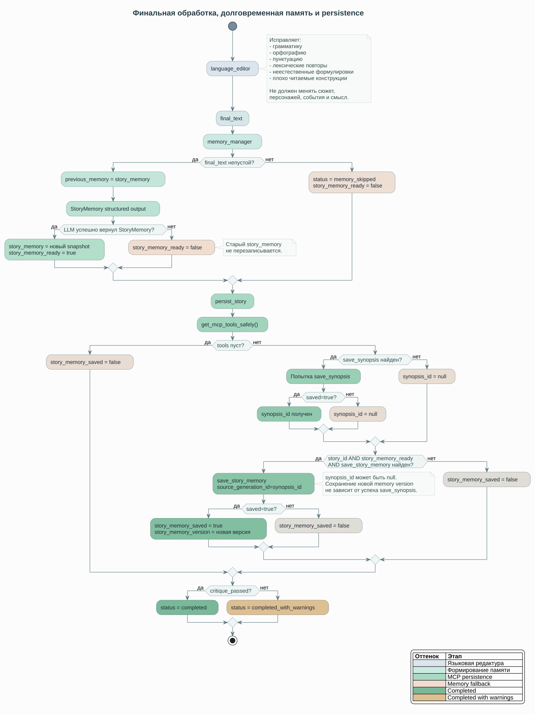
4. Описание инструментов
MCP-сервер находится в каталоге mcp_server/ того же репозитория и запускается отдельным сервисом на 8001. Отдельная документация для другого репозитория не требуется.
Основной граф не выполняет SQL к предметным таблицам напрямую. Цепочка ответственности выглядит так: LangGraph node → MCP client → FastMCP tool → service → PostgreSQL или HTTP dependency.
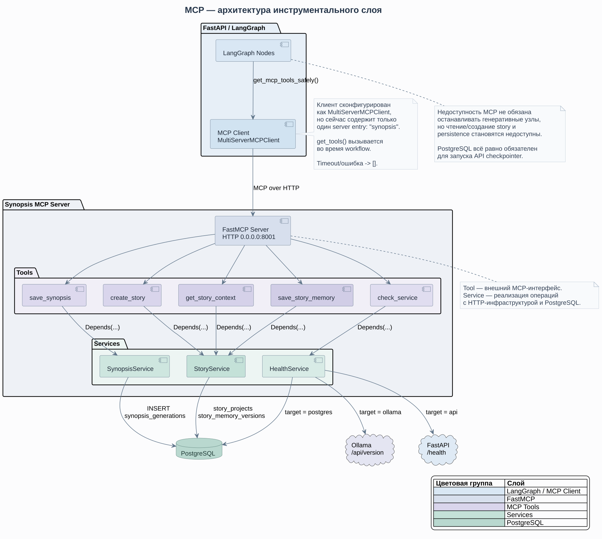
4.1. Архитектура MCP-сервера
server.py создаёт FastMCP и регистрирует три группы tools: health, synopsis и story.
Tool-функции являются тонким интерфейсом: валидируют параметры, получают service через Depends и возвращают Pydantic-модель результата. Бизнес-логика находится в HealthService, SynopsisService и StoryService.
4.2. MCP Client
API использует MultiServerMCPClient, но текущая конфигурация содержит только один сервер — synopsis.
get_mcp_tools_safely() вызывается во время выполнения, а не при старте API. Получение tools ограничено MCP_CONNECT_TIMEOUT_SECONDS. При timeout или другой ошибке функция возвращает пустой список.
find_mcp_tool() ищет tool среди уже загруженных объектов без нового соединения. parse_mcp_tool_result() извлекает JSON из dict, JSON-строки или text-content blocks.
4.3. check_service
Диагностический tool принимает одно из фактических значений ServiceName:
-
api; -
ollama; -
postgres.
Для API запрашивается /health, для Ollama — /api/version, для PostgreSQL выполняется SELECT current_database(), current_user.
Tool возвращает ok или unavailable, latency, диагностические данные и ошибку при наличии.
4.4. save_synopsis
Сохраняет одну генерацию в synopsis_generations: story/thread IDs, пользовательский запрос, ТЗ, Writer, draft, final text, результат Critic и revision_count.
При успехе возвращает synopsis_id; при ошибке PostgreSQL сервис возвращает saved = false, а не пробрасывает исключение наружу.
4.5. create_story
Создаёт запись story_projects с title, premise, genre, style, language. Память инициализируется database default как {}, версия — 0. Возвращает постоянный story_id.
4.6. get_story_context
По story_id загружает параметры проекта, текущий JSONB snapshot и memory_version.
found = false без error означает, что записи нет. found = false с error означает техническую ошибку доступа к PostgreSQL.
4.7. save_story_memory
Сохраняет переданный memory как новый полный канонический snapshot; tool не выполняет merge самостоятельно.
StoryService делает операцию транзакционно:
-
блокирует строку
story_projectsчерезSELECT … FOR UPDATE; -
вычисляет
new_version = current_version + 1; -
обновляет
story_projects.memoryиmemory_version; -
вставляет snapshot в
story_memory_versions; -
фиксирует транзакцию.
source_generation_id необязателен и может быть null.
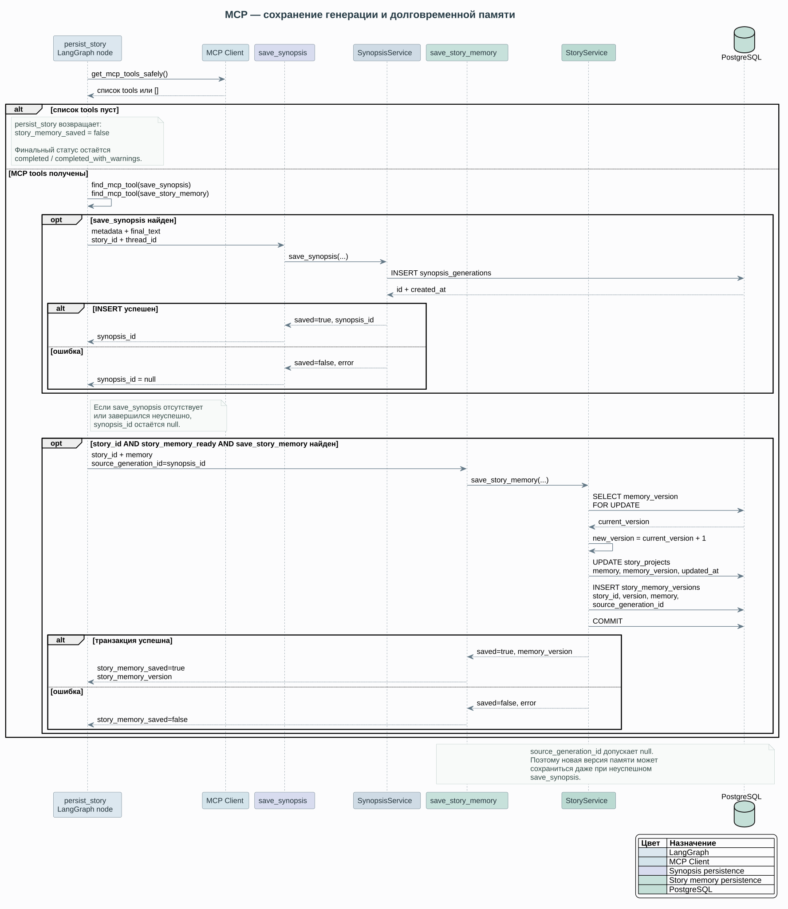
4.8. Как граф использует tools
| Узел | MCP tools |
|---|---|
|
|
|
|
|
|
Выбор tool детерминирован кодом узла. LLM не решает самостоятельно, какой MCP tool вызывать.
5. Хранение состояния и памяти
В проекте разделены три уровня идентификации и persistence:
| Идентификатор | Область действия | Назначение |
|---|---|---|
|
Один LangGraph workflow |
Checkpoint, HITL и resume. |
|
Литературный проект |
Долговременная память между независимыми workflow. |
|
Одна сохранённая генерация |
Связь результата и, при успешном сохранении, версии памяти. |
Один story_id может иметь несколько thread_id и synopsis_id.
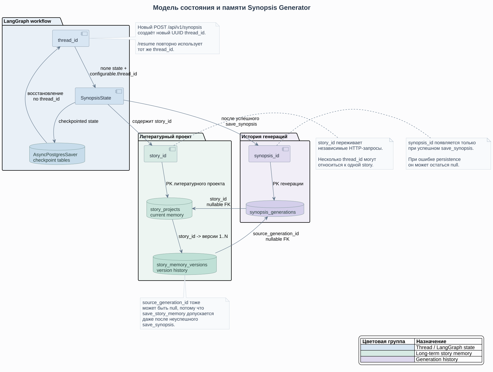
5.1. LangGraph checkpoint
При старте FastAPI в lifespan создаётся AsyncPostgresSaver, вызывается setup(), после чего граф компилируется с этим checkpointer. Поэтому PostgreSQL обязателен уже для запуска API, даже если MCP-сервер временно недоступен.
Для нового /api/v1/synopsis создаётся UUID thread_id. LangGraph получает его в:
{
"configurable": {"thread_id": thread_id},
"recursion_limit": 30
}wait_for_clarification вызывает interrupt(). Для продолжения /api/v1/synopsis/resume передаёт Command(resume=message) с тем же thread_id, и checkpointer восстанавливает состояние thread.
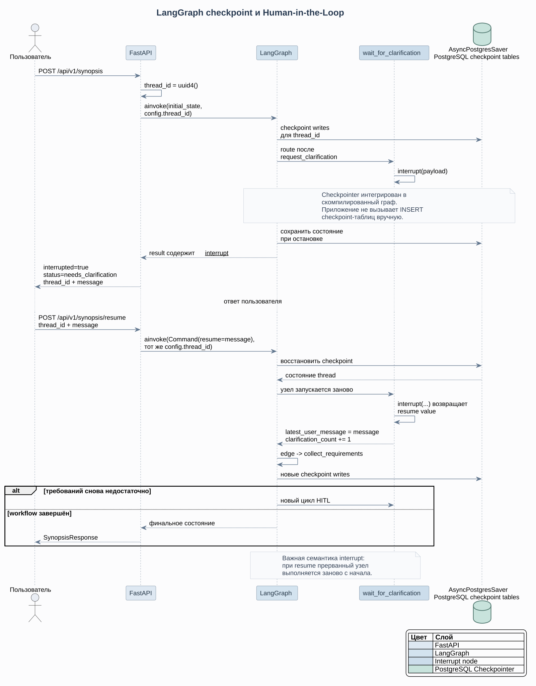
В базе checkpointer использует собственные таблицы checkpoints, checkpoint_blobs, checkpoint_writes и checkpoint_migrations. Они не входят в SQLAlchemy metadata приложения. В migrations/env.py include_name() ограничивает Alembic таблицами из target_metadata, поэтому autogenerate не пытается управлять внутренними таблицами LangGraph.
5.2. Долговременная StoryMemory
Checkpoint решает техническую задачу одного thread, но не является памятью литературного проекта. Для продолжений используется story_id и предметные таблицы.
story_projects хранит текущий snapshot:
id
title
premise
genre
style
language
memory JSONB
memory_version
created_at
updated_atStoryMemory содержит summary, персонажей, факты мира, локации, незавершённые линии, последние события и стилистические правила. Полные предыдущие синопсисы в prompt памяти не подставляются: Writer получает компактный snapshot.
После memory_manager новая память сохраняется одновременно как текущая версия в story_projects и как новая запись в story_memory_versions.
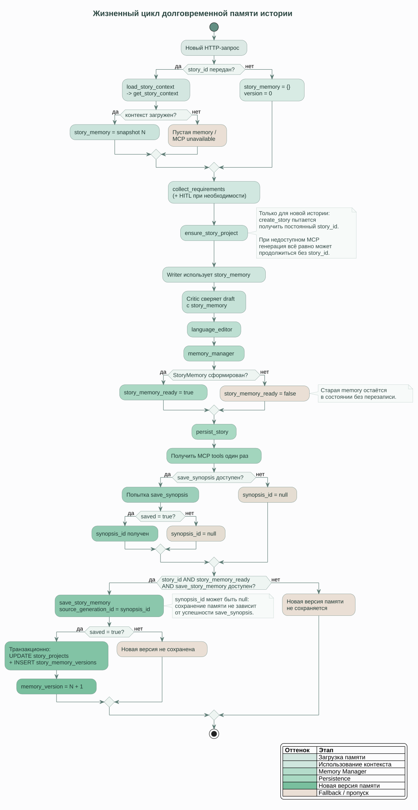
5.3. Версионирование и история генераций
story_memory_versions содержит story_id, version, полный JSONB snapshot, необязательный source_generation_id и время создания. Для пары (story_id, version) действует уникальное ограничение.
synopsis_generations хранит результаты отдельных генераций: story_id, thread_id, пользовательский запрос, ТЗ, Writer, draft, final text, Critic score/pass и revision_count.
Это не полноценная история чата. В предметной модели нет последовательности HumanMessage/AIMessage; в SynopsisState есть только original_user_request и latest_user_message.
6. Дополнительные возможности
Статус пунктов из задания:
| Возможность | Статус | Текущая реализация |
|---|---|---|
Память между запросами |
Реализовано |
|
История сообщений |
Частично |
Есть исходный и последний пользовательский запрос, checkpoints и история генераций; отдельного chat history нет. |
Несколько инструментов для одного агента |
Частично |
MCP содержит пять tools, а |
Выбор модели |
Частично |
Модель задаётся глобально через |
Логирование |
Реализовано |
Есть console/file logging, ротация и измерение времени выполнения обёрнутых graph nodes. |
Трассировка |
Не реализовано |
LangSmith/OpenTelemetry/Jaeger не подключены. |
Retry инструментов |
Не реализовано |
Есть error handling и timeout MCP, но нет автоматических повторных попыток. |
Несколько MCP-серверов |
Не реализовано |
|
Human-in-the-Loop |
Реализовано |
|
Writer — Critic loop |
Реализовано |
Critic возвращает draft выбранному Writer до |
Версионирование StoryMemory |
Реализовано |
Полные snapshots сохраняются в |
Graceful degradation MCP |
Реализовано |
Ошибка подключения к MCP возвращает пустой список tools; генеративная часть может завершиться без persistence. |
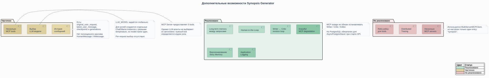
6.1. Настройки LLM
Все роли используют одну модель settings.llm_model, но различаются температурой:
| Роль | Temperature |
|---|---|
Requirements |
|
Clarification |
|
Writer |
|
Critic |
|
Editor |
|
Memory Manager |
|
reasoning=False установлен для всех создаваемых ChatOllama.
6.2. Логирование и graceful degradation
Application logger пишет в stdout и logs/app.log. Используется TimedRotatingFileHandler: ротация ежедневно в полночь, хранится семь резервных файлов. log_graph_node() фиксирует начало, завершение, ошибку и duration_ms.
MCP-клиент использует timeout и возвращает пустой список tools при ошибке соединения. Это не означает полной независимости от инфраструктуры: PostgreSQL обязателен для AsyncPostgresSaver уже на старте FastAPI.
7. Ограничения текущей реализации
Текущая версия является учебным MVP. Основные ограничения:
7.1. Маршрутизация и модели
-
жанр определяется LLM, но выбор Writer выполняется простым поиском ключевых слов;
-
одновременно используется только один Writer;
-
все роли используют одну модель из
LLM_MODEL; -
качество structured output, текста и memory compaction зависит от локальной LLM.
7.2. Память
-
story_idнужно передавать явно — автоматического определения литературного проекта нет; -
StoryMemory хранится как один компактный JSONB snapshot, без embeddings и semantic retrieval;
-
Memory Manager может потерять второстепенную информацию при compaction;
-
полноценной истории сообщений нет.
7.3. Надёжность и observability
-
централизованной retry/backoff-политики для LLM и MCP нет;
-
используется один MCP-сервер;
-
есть application logging, но нет distributed tracing;
-
LangGraph workflow выполняется последовательно, без параллельной работы агентов;
-
PostgreSQL является обязательной зависимостью checkpointer и запуска API.
7.4. Пользовательская модель
Нет регистрации, авторизации, владельцев story projects и разграничения доступа. story_id не связан с учётной записью пользователя.
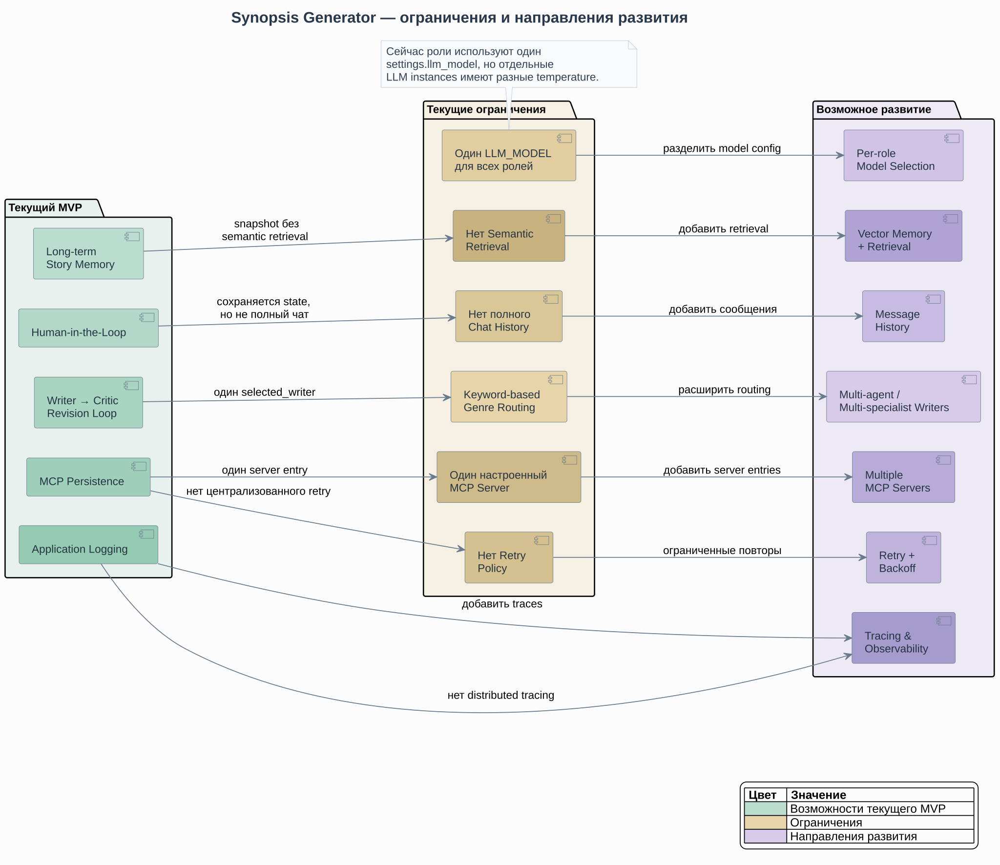
8. Возможные направления развития
Наиболее естественные следующие шаги:
8.1. Память и история
-
добавить отдельную таблицу message history;
-
внедрить semantic retrieval для больших историй;
-
выделить защищённые канонические факты, которые Memory Manager не должен удалять без явного retcon;
-
добавить просмотр и восстановление прошлых
story_memory_versions; -
реализовать автоматическое предложение подходящего
story_idс подтверждением через HITL.
8.2. Модели и агенты
-
поддержать отдельные модели для Requirements, Writer, Critic, Editor и Memory Manager;
-
добавить выбор профиля модели через конфигурацию или API;
-
исследовать несколько Writer-специализаций для одного запроса и выбор/слияние результатов.
8.3. MCP и надёжность
-
добавить ограниченный retry с backoff для безопасных внешних операций;
-
разделить tools между несколькими MCP-серверами;
-
добавить tracing через LangSmith или OpenTelemetry;
-
определить политику повторного сохранения при временной ошибке persistence.
8.4. Продуктовый слой
-
добавить пользователей и владельцев литературных проектов;
-
API/интерфейс для списка историй и генераций;
-
просмотр истории памяти и откат без удаления предыдущих версий.
8.5. Тестирование
Приоритетные автоматические тесты:
-
route_after_requirementsиroute_after_critic; -
max_clarificationsиmax_revisions; -
HITL resume после
interrupt(); -
graceful degradation MCP;
-
последовательное версионирование memory;
-
сохранение предыдущей memory при ошибке
memory_manager; -
deterministic LLM mocks для graph tests.
Текущая архитектура уже разделяет workflow, MCP persistence и StoryMemory, поэтому эти изменения можно добавлять постепенно без полной переработки графа.